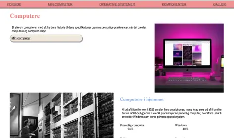
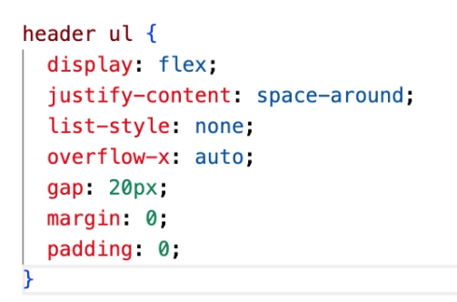

Grundlæggende web
Introduktion til Temaet
I dette tema fik vi en grundlæggende introduktion til de mest anvendte redskaber i en multimediedesigners værktøjskasse. Vi lærte at designe digitale brugergrænseflader, producere digitalt indhold og lave responsivt webdesign. Temaet omfattede praktiske færdigheder inden for HTML, CSS.
Studiestartsprøve Website
Formålet med denne opgave var at skabe et responsivt website ved hjælp af HTML, CSS og media queries. I denne opgave blev al indhold tildelt, og vi skulle bruge et layoutdiagram til at opbygge vores site. Derudover lærte jeg at anvende CSS grid og flexbox til layout. Dette lærte mig vigtigheden af at forstå layoutmetoder på en hjemmeside, og skabe en god struktur fra start. Den største udfordring var, at lærer og forstå grid og media queries.
Kompetencer opnået
- Visual Studio Code
- FileZilla
- Hierarkisk mappestruktur
- Filformater
- Media Queries
- Grid